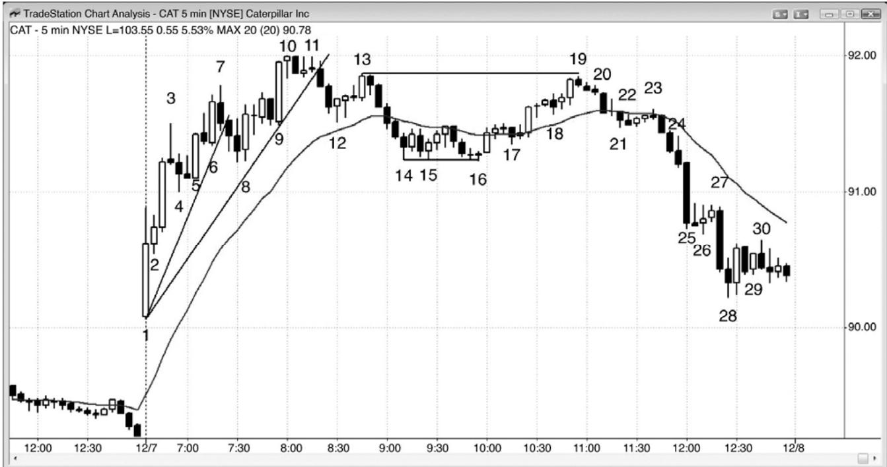

第1章 反转交易范例¶
第 1 章 反转交易范例
当交易者们入场一笔反转交易时，他们正预期趋势的回撤幅度足以做一笔波段交易，甚至形成一轮反向趋势。入场点、保护性止损和获利了结都与其他波段或趋势交易相同，我们在前两本书中讨论过。由于交易者们正预期出现一波较大幅度的运动，所以成功率常常为 50%或更低。一般来说，当风险保持不变时，潜在回报越大，意味着成功率越低。这是因为，交易中的优势总是很小的，如果存在很高的成功率，那么交易者们会迅速将其中性化，使很高的成功率在几棒之内消失，结果只产生很低的利润。不过，由于趋势反转交易的回报可能比风险大若干倍，所以它可能拥有一个可获利的交易者方程。
当交易者观察一天收盘后的图表时，反转交易看起来并不难，但实际上要难得多。一旦出现对趋势线的强势突破，然后反转测试趋势极点，那么交易者就需要一条很强的信号棒。然后，它通常出现在非常情绪化的市场中，初学者们仍然认为原来的趋势在起作用。他们或许在当天早些时候已经做了几笔亏损的逆势交易，不希望再赔钱了。他们的拒绝心态致使他们错过早期的入场。然后，他们等待评估坚持到底的强弱。坚持到底通常表现为大而迅猛的尖峰，由若干条强趋势棒构成，迫使交易者们快速决定是否承担比平常大很多的风险。他们最后常常选择等待回撤。虽然他们减小头寸规模，以使得资金风险与其他任何一笔交易相同，但是跳动数风险为平时的两到三倍，令他们感到害怕。回撤入场并不容易，因为每个回撤都是从一个微型反转开始的，交易者们担心回撤可能是先前趋势的恢复。他们一直等待，直到当天几乎结束，最后终于决定新趋势是清晰的；但是已经没有时间交易了。趋势会竭尽所能地把交易者们排斥在外，这是它们能够让交易者们整天追逐市场的唯一方法。当一个架构简单明了时，之后的运动通常是小而快的刮头皮式运动。如果一波运动打算行进较长时间，那么它必须是模糊的，而且很难交易，以便把交易者们阻挡在外，迫使他们追逐趋势。
图1.1 重要反转处的交易

如图1.1所示，今天交易者们有几种方法在美国卡特彼勒（Caterpillar Inc.，CAT）中的反转处交易，我认为有一种方法值得一试，它是我的一位朋友使用的方法。若干年前，我与那位交易者有过一次长谈。他专门在重要反转处交易。通常，他一天只做一两笔交易，在准备反转入场前，他总是希望看到趋势线被强势突破。举例说明，在类似这样的多头趋势中，他不会在棒 3 下方做空，因为先前没有多头趋势线被突破。他也不会在棒 7 反转棒下方做空，同样是因为之前没有多头趋势线被明显地向下突破。跌破棒 3 的运动只持续了一棒，甚至没有到达均线。
P55
从棒 7 开始的三条空头棒向下突破了多头趋势线，那是一个卖压的征兆，但是那一波下跌并没有强到到达均线。那么他会分析可能测试棒 7 趋势高点的那一波反弹。它是一波两条腿反弹，也就是说存在一些双向交易，所以空头显示出一些力量，而且那是当天第三次上推。由于重要反转大约常常出现在第一个小时内，所以他可能会在棒11下方做空，那是一个二次入场做空架构，但是他可能不会预期出现重要反转。在那一点，由于当天仍是一个尖峰和通道多头趋势日，所以那次下跌可能只是测试多头通道的起点棒 4，在那里，市场可能形成一个双重底，然后反弹。由于那条多头通道是一个楔形（包含三推），所以很可能形成两条腿的横盘至下跌（调整）。由于我的朋友是一位波段交易者，所以他可能允许出现回撤，只要他认为自己最初的预测仍然正确就好。因此，他可能将止损保持在信号棒上方，或者位于棒11后面的强空头棒上方，允许截止棒 13 的回撤，预期形成第二条下跌腿。如果他仍未做空，那么它可能会在棒 13 双棒反转和更低高点重要趋势反转下方做空，它是对棒 11 向上突破后突破测试。
棒 11 后面的两条空头棒，可能会使大部分交易者们怀疑总在场内状态是否已经向下翻转，到以棒14为终点的五棒空头尖峰结束，大部分交易者们认为总在场内状态真的已经翻转为空头。在这一点，如果他决定继续持有空头，那么他会把自己的保护性止损调紧，使其略高于棒 13 之后开始的那个空头尖峰的起点。更有可能的是，在超越棒 16 的运动中，他会买回大部分或全部空头头寸，因为两条腿下跌已经发生（截止棒 12 的运动是第一条下跌腿），棒 16 与棒 14 或 15 形成一个双重底，而且它是一个均线缺口棒做多架构的三次入场（它的高点低于均线，是截止棒 10 的强反弹之后的第一波回撤）。如果他买回自己的空头，那么他会观察从棒 16 开始的反弹，评估与截止棒 16 的下跌相比它的强弱。如果它相对较弱，那么他会准备在市场测试棒10多头趋势高点时再次做空。那次测试可能形成更低高点、双重顶或更高高点。
从棒 16 到棒 19 的反弹包含三条腿，所以是一个楔形空头旗形。由于它是多头趋势线被强势向下突破后的一波反弹，所以很可能成为一波较大调整的一部分，那波较大调整至少会再形成一条下跌腿。市场很可能形成一段交易区间或者一个趋势反转。反弹并没有包含两条连续的强多头趋势棒，所以多头并未收回市场的控制权。棒 19 与棒 13 形成一个双重顶，而且由于现在可能是一轮空头趋势，所以那是一个双重顶空头旗形，当与多头趋势的顶部棒 10相比较时，也是一个双重顶或更低高点重要趋势反转。棒 19 也是一条空头反转棒，在寻找市场顶部时，那是很重要的。这是当天最强的趋势反转架构，因为截止棒 14 的下跌空头尖峰说服大部分交易者总在场内头寸已经变为空头，而且只要反弹不能超越开始于棒 13 之后的空头尖峰的顶部，那么空头就拥有市场。很多交易者认为，只要市场不超越棒13，那么空头就依然控制市场，在可能形成的新空头趋势中，市场或许会正形成一个更低高点。空头把他们的保护性止损设在略高于棒 13 处，因为他们预期出现一个双重顶或一个更低高点，无论哪种情况出现，他们就会离场，等待另一个卖出信号。很多多头会在棒 10 和棒 13 之间买进，并且在截止棒 16 的抛盘期间坚持持有，看一下空头有多么强。他们认为卖压很强（下跌运动突破趋势线和均线，而且持续了很多棒），截止棒 19 的反弹并未强到足以说服他们预期多头趋势会在不调整的情况下创出一个新高。
他们是最坚定的多头（因为他们甘愿在截止棒 16 的、延长的下跌中继续持有），一旦他们放弃，就没有人会在这些价位买进。市场不得不向下探索，寻找一个多头将会回来、空头将会买回他们的空头头寸的价位。在棒 16 开始的上涨运动中，没有连续的强多头趋势棒或其他强势买进征兆，这使得空头更加积极，多头更不愿买进。由于多头非常自信市场不久将跌得更低，所以他们利用截止棒 19 的反弹来退出自己的多头头寸，盈亏平衡或者小幅亏损。这些失望的多头的卖出，加上正重仓做空、试图阻止市场超越棒 13 的激进空头的卖出，结果使市场在棒 19 向下反转。多头正希望在更低价位再次买进，但是需要市场即将向上反转的一个征兆。七棒下跌之后，截止棒 23 的横盘运动不是一个很强的底部，所以大部分多头不愿买进，除非价格进一步下跌。空头愿意在任意时间获利了结，但是仅当出现合理的底部征兆时，他们才会买回自己的空头头寸。在没有底部征兆的情况下，多空双方都不愿买进。另外，剩余多头继续抛出他们的头寸，增加了卖压。在从棒 23 开始的下跌过程中，当空头看到不断增强的卖压时，他们继续卖出。结果形成一个很强的趋势反转，表现为棒16向下突破多头趋势线后棒 19 更低高点的形式。正如在所有强趋势的情况一样，交易者们推动他们的空头头寸，随着市场在截止棒 25 低点和棒 28 低点的下跌尖峰中迅速下跌，他们不断加仓，而在棒 25 低点和棒 28 低点处，他们开始获利了结。所有趋势棒都是尖峰、高潮、突破和缺口。棒 25 是一条大型空头突破棒，很可能引出一波向下的测量运动，基准是那个交易区间的高度。棒 25 本身可能成为一个测量缺口，缺口中点是棒 16 低点（缺口顶端）和棒 27 高点（缺口底端）之间的中点。这可能在今天或明天引起一波向下的测量运动。
P56
截止棒 19 的反弹是一个双重顶空头旗形、一个楔形多头旗形，和空头趋势中的两条上涨腿（棒15 和棒16之间的两条腿波段高点是第一条），而且它拥有一个极好的交易者方程。风险是超越棒 19 高点，或者说大约 10 美分，回报最低在下方 50 美分，测试棒 16 低点，在那里，市场可能形成一个双重底，或者是一个大型三角形或多头旗形。由于市场处于空头趋势中，或者至少是在一段交易区间的顶部，所以成功率最低60%。60%的成功率，10美分的风险，加上50美分的回报，构成一笔很棒的交易。如果做这样的10笔交易，那么将赚到$3.00，亏损 40 美分，平均每笔交易盈利 26 美分。
交易者们认为，如果市场跌破棒16，那么就可能从那个双重顶开始形成一波向下的测量运动，事实如此。棒16区域是对突破缺口的突破测试，突破缺口指的是从棒1到棒3的多头尖峰。市场在这次测试后向上反弹，多头不希望跌破测试点，因为他们将把那种下跌看作一个疲弱的征兆。就像空头不希望截止棒 19 的反弹超越棒 13 更低高点一样，那可能引起一波向上的测量运动，多头也不希望从棒 19 开始的下跌跌破棒 16 更高低点，那可能引起一波向下的测量运动。由于我的那位朋友会把从棒 19 开始的这一波下跌看作一个趋势交易机会，所以他可能会像做趋势交易一样交易（第一本书中讨论了如何做趋势交易）。初始风险只有 10美分，市场很可能测试棒 16 低点，而且这是最低目标，如果届时出现暂停棒，那么他可能会在那里了结一半的头寸。由于没有暂停，没有明显的获利了结行为，所以直到棒28，他可能才会获利了结。这是一条卖出高潮棒之后的一次暂停，那条卖出高潮棒之前可能是一个最终旗形（在棒 27 结束的三棒）。他可能会了结一半头寸，获得$1.20 的利润，持有剩余头寸直到收盘前一两分钟，再将另外$1.30的利润落袋。
顺便提一句，在过度的多头趋势中，强势多头和强势空头都喜欢看到大型多头趋势棒，因为它常常引出一波低于均线的两条腿回撤，比如这里棒 9 处，这一点需要牢记。预期出现的调整为他们提供了一个短暂的交易机会，尽管不是趋势反转交易。棒 9 是在没有太多回撤的情况下出现的第三波连续的买进高潮（棒 1 至棒 3 是第一波，棒 5 至棒 6 是第二波）。它更有可能成为一个耗尽缺口，而非测量缺口（它更可能成为一波调整的起点，而非一条新的上涨腿的起点）。在这种情况下，强势多头和强势空头都在那一棒的收盘价、它的高点上方、下一两棒的收盘价（特别是因为棒 10 后一棒拥有一个空头实体），以及前一棒的低点下方卖出。多头正在抛出自己的多头头寸获利，空头正在卖空建立新的空头头寸。大部分空头所选的保护性止损会小于棒 9 买进高潮多头趋势棒的跳动数。多头不准备再次买进，空头不再获利了结他们的空头头寸，直到两条腿调整完成，那是在棒14至棒16区域（截止棒12的运动是第一条下跌腿）。下跌运动非常强劲，足以使双方认为，在对棒 10 多头高点进行更低高点或更高高点测试后，市场可能已经反转进入一轮空头趋势。
P57